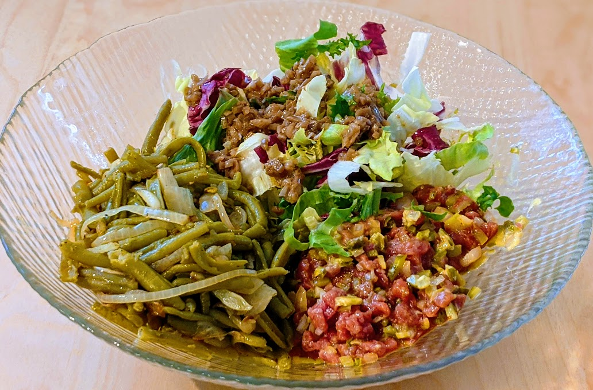

Steaks tartare

Ici avec une poêlée de haricots et une salade verte.
Pour une personne :
- Entre 100 et 200g de viande de bœuf ou de cheval
- Quelques cornichons
- Une douzaine de câpres
- Un petit oignon
- Une cuillère à café de moutarde
- Deux cuillères à soupe d'huile d'olive ou de noix
- Sel, poivre
- Un œuf
- Quelque chose pour épicer : de la sauce Tabasco, ou de l'huile d'olive mélangée à du Tabasco ou du piment écrasé.
- (Facultatif) Une cuillère à soupe de sauce Worcestershire
- (Facultatif) Quelques herbes (persil, origan, whatever)
- Déposer au fond d'un saladier la moutarde, l'huile, un peu de sel et de poivre.
- Hacher (à l'aide un grand couteau de préférence, sinon il est possible de prendre directement de la viande hachée) assez finement la viande, et la mettre dans le saladier
- Hacher le plus finement possible cornichons, oignons, câpres, et rajouter le tout au mélange.
- Mélanger le tout avec le jaune d'œuf (garder le blanc pour plus tard, on peut aussi le rajouter au mélange mais il n'apporte rien à part une consistance louche).
- Ajouter les épices, la sauce Worcestershire, mélanger encore, et décorer à l'aide des herbes. Servir froid avec des frites ou des haricots verts.